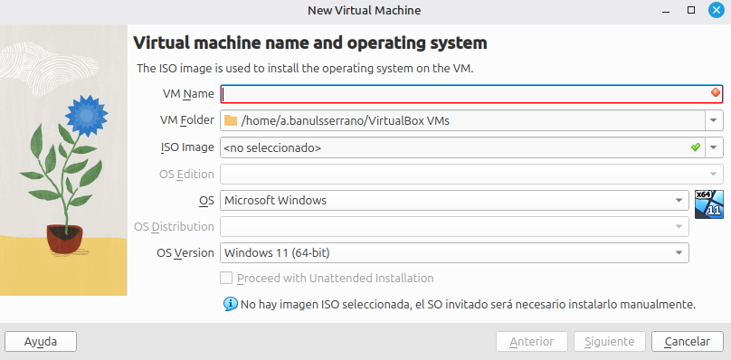

Guía: configuración de máquinas virtuales en VirtualBox¶
Volver al índice de todas las unidades
Varias actividades del módulo (especialmente en la UT2) piden configurar y conectar varias máquinas virtuales (VM) entre sí: para calcular y comprobar direccionamiento IP, para verificar que dos subredes no se ven entre sí... Para estas primeras prácticas partimos de una máquina virtual ya preparada, que el profesorado proporciona como archivo OVA, en lugar de instalar un sistema operativo desde cero (eso lo veremos más adelante en el curso).
Esta guía explica cómo importar esa OVA en VirtualBox (versión 7.2, la instalada en los talleres), ajustar sus parámetros y, sobre todo, cómo configurar correctamente su red, que es la parte que más confusión suele generar la primera vez.
¿Nunca has usado VirtualBox?
No hace falta memorizar nada de esta página: tenla abierta al lado mientras importas tu primera máquina virtual y sigue los pasos en orden.
1. Importar la máquina virtual (archivo OVA)¶
- Pide al profesorado el archivo .ova correspondiente a la actividad y guárdalo en tu equipo.
- Abre VirtualBox y ve a Archivo > Importar servicio virtualizado (File > Import Appliance).
- Selecciona el archivo
.ovaque te han proporcionado y pulsa Siguiente. - VirtualBox mostrará un resumen de la configuración de la máquina (nombre, RAM, CPU, disco...). Puedes cambiar aquí mismo el nombre de la VM (por ejemplo,
UT2-PC1) para identificarla fácilmente si vas a importar varias. - Pulsa Importar y espera a que termine el proceso.
2. Ajustar los parámetros de la máquina importada¶
Con la VM ya importada (todavía apagada), selecciónala en la lista y entra en Configuración:
| Sección | Qué ajustar |
|---|---|
| Sistema > Procesador | Número de núcleos virtuales asignados (1-2 suele bastar para las prácticas) |
| Sistema > Placa base | Memoria RAM asignada; no superes la mitad de la RAM física del equipo del taller, para no afectar a otras VMs que tengas abiertas a la vez |
| Pantalla > Memoria de vídeo | El valor por defecto suele ser suficiente |
¿Y si necesito más adelante instalar un sistema operativo desde cero?
Esa parte se verá más adelante en el curso, con el asistente Nueva de VirtualBox. Por ahora, basta con importar la OVA que indique el profesorado.
3. Configuración de red¶
Esta es la parte clave para las actividades de la UT2. Se configura en Configuración > Red, pestaña Adaptador 1, desplegable Conectado a:.
| Modo | ¿Salida a Internet? | ¿Las VMs se ven entre sí? | ¿Visible desde la red física del aula? |
|---|---|---|---|
| NAT | Sí | No (cada VM está aislada tras su propio NAT) | No |
| Adaptador puente (Bridged) | Sí | Sí, como si fueran equipos más de la red del aula | Sí |
| Red interna (Internal Network) | No | Sí, entre las VMs que compartan el mismo nombre de red interna | No |
| Red solo anfitrión (Host-only) | No | Sí, entre ellas y con el equipo físico (host) | No |
| Red NAT (NAT Network) | Sí | Sí, entre las VMs de la misma red NAT | No |
Cómo conectar varias VMs entre sí con Red interna: en cada una de las VMs que quieras que se vean, entra en Configuración > Red > Adaptador 1 > Conectado a: Red interna, y escribe el mismo nombre en el campo "Nombre" (por ejemplo, ut2-lab). Solo las VMs que compartan exactamente ese nombre forman parte de la misma red interna.
Qué adaptador usar en cada actividad¶
| Actividad | Adaptador recomendado | Motivo |
|---|---|---|
| 2.3 — Direccionamiento IP | Red interna | Solo necesitas que la VM tenga una IP configurada y puedas hacer ping a otro equipo de la misma red; no hace falta salida a Internet. |
| 2.4 — Subnetting | Red interna | Igual que la anterior; además te permite comprobar que dos VMs en subredes distintas no se alcanzan entre sí, sin riesgo de interferir con la red real. |
Si en algún momento necesitas que la VM también tenga salida a Internet (por ejemplo, para actualizar paquetes del sistema), puedes añadir un segundo adaptador de red (pestaña Adaptador 2) en modo NAT, y dejar el Adaptador 1 en Red interna para las pruebas de red del módulo.
4. Instantáneas (snapshots)¶
Antes de hacer un cambio que pueda romper la configuración de red o del sistema (por ejemplo, antes de asignar una IP manual a la VM), toma una instantánea: botón derecho sobre la VM > Instantánea > Tomar. Si algo falla, puedes restaurar esa instantánea y volver al estado anterior sin tener que importar la OVA de nuevo.
5. Resumen rápido¶
- Archivo > Importar servicio virtualizado → selecciona la OVA → ajusta el nombre si vas a importar varias → Importar.
- Revisa en Configuración la RAM y CPU asignadas.
- Configuración > Red > Adaptador 1 > Red interna (mismo nombre en todas las VMs del ejercicio).
- Toma una instantánea antes de cambios importantes.
- Arranca la VM: el sistema operativo ya está instalado, listo para trabajar.
Apéndice: crear una máquina virtual desde cero¶
Esto no hace falta para las primeras actividades, en las que se parte de una OVA. Lo veremos más adelante en el curso, cuando toque instalar un sistema operativo desde cero.
- Abre VirtualBox y pulsa Nueva.
-
En la primera pantalla del asistente, rellena:
- VM Name: un nombre descriptivo (por ejemplo,
UT2-PC1). - VM Folder: la carpeta donde se guardará (el valor por defecto suele servir).
- ISO Image: selecciona la imagen ISO del sistema operativo que vas a instalar, si ya la tienes descargada. Si la dejas en "no seleccionado", podrás instalar el sistema manualmente más adelante.
- OS y OS Version: el sistema operativo y la versión concreta (VirtualBox suele detectarlos solo a partir del nombre de la ISO).

No marques \"Proceed with Unattended Installation\"
Esa opción instala el sistema operativo automáticamente, sin que veas ni controles los pasos de la instalación. Para las prácticas del módulo debe quedar desmarcada: la instalación se hace manualmente, paso a paso.
- VM Name: un nombre descriptivo (por ejemplo,
-
En las pantallas siguientes del asistente, asigna la memoria RAM y crea un disco duro virtual nuevo (tipo VDI, reservado dinámicamente, 20-25 GB suele ser suficiente).
- Monta la imagen ISO de instalación en Configuración > Almacenamiento, y arranca la VM para instalar el sistema operativo paso a paso.